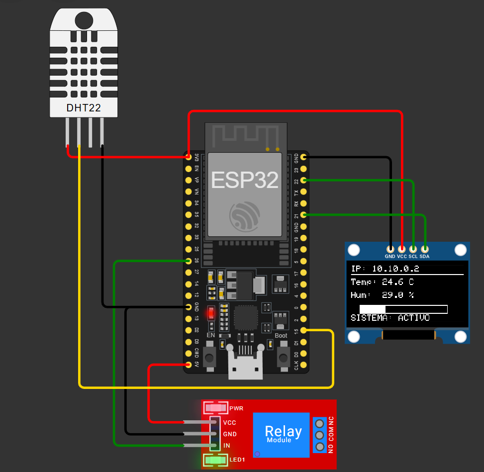

Datos en tierra: Wi-Fi, HTTP y marcas de tiempo
Publicar o registrar una lectura con su origen temporal y diferenciar conectividad, recepción y dato válido.
Qué añadimos al conectar el equipo
La red permite transportar información entre programas. No mejora automáticamente la exactitud del sensor ni garantiza que todos los mensajes lleguen. El proyecto de riego aporta un servidor web; el reloj aporta una referencia de hora. En la ruta de drones reutilizamos esas ideas para observar datos de banco en tierra. La bomba y el agua no son necesarias para aprender la cadena de comunicación.

El curso diferencia datos locales, mensajes enviados y registros recibidos. Una pantalla remota puede conservar la última respuesta aunque el dispositivo haya dejado de actualizar. Por eso se transportan identificador, tiempo y estado junto al valor. La conexión Wi-Fi es una condición del enlace; la validez de la medición pertenece a otra parte de la aplicación.
La ruta principal enseña una conexión local y una respuesta HTTP sencilla. NTP se utiliza como ampliación guiada de referencia de tiempo. El mouse BLE queda como demostración opcional en hardware, porque el simulador consultado no implementa esa radio. Se conserva el enlace de ampliación sin convertir tres tecnologías de red en un supuesto dominio avanzado durante una sola sesión.
Dirección, solicitud y respuesta
En modo estación, el ESP32 se conecta a una red que le asigna o permite usar una dirección. Un servidor atiende solicitudes sobre una interfaz; un cliente inicia una solicitud. HTTP organiza método, ruta y respuesta. Nuestro recurso /datos devuelve un objeto pequeño con nombres de campo. Una dirección IP mostrada por un simulador no tiene por qué ser accesible desde el navegador de la computadora del alumno.
Términos del ensayo
| Término | Función | Ejemplo |
|---|---|---|
| SSID | Nombre de red | Red del laboratorio |
| IP | Dirección del equipo | Observar la asignada |
| Ruta | Recurso solicitado | /datos |
| Respuesta | Contenido y estado | JSON de lecturas |
Wokwi ofrece conexión saliente a internet mediante su gateway. El acceso entrante a un servidor simulado requiere una configuración de gateway compatible y puede depender del servicio disponible. La práctica gratuita puede observar conexión, datos de serie y consultas salientes; el servidor HTTP local se demuestra con la placa del docente o con el gateway habilitado. El curso no promete abrir la IP simulada desde cualquier celular sin esa condición.
Conectado pero sin dato
El estado Wi-Fi indica conectado, pero /datos muestra una lectura antigua. ¿Qué parte falta revisar?
Ver razonamiento del caso
La adquisición, su marca de tiempo y la generación de la respuesta. Tener enlace no demuestra que exista una medida nueva.
Tiempo relativo y hora UTC
millis() permite ordenar intervalos desde el inicio del equipo. La hora UTC sirve para relacionar registros con una referencia de calendario cuando se obtuvo una sincronización válida. NTP intercambia información temporal a través de la red; no convierte al ESP32 en un reloj atómico ni elimina los errores de latencia y de oscilador. Una lectura previa a la sincronización no se trata como hora correcta por estar escrita en una columna llamada fecha.
Dos referencias de tiempo
| Referencia | Útil para | Qué verificar |
|---|---|---|
| Tiempo desde inicio | Intervalos locales | Reinicio y retorno |
| Hora UTC | Relacionar registros | Origen y sincronización |
| Hora presentada | Lectura humana | Zona y formato |
Mismo valor de tiempo
Dos placas informan millis() = 5000. ¿Se demuestra que midieron en el mismo instante global?
Ver razonamiento del caso
No. Cada contador parte del inicio de su equipo. Se necesita una relación entre referencias si se quieren alinear registros.
Para el proyecto final basta conservar una marca relativa coherente por dispositivo. Si el alumno añade UTC, registra también el estado de esa referencia. La precisión temporal necesaria depende de la pregunta: ordenar dos estados de una pantalla no exige lo mismo que relacionar mediciones rápidas de varios dispositivos. La elección se justifica por misión y evidencia.
Una respuesta pequeña que se puede inspeccionar
Esquema del recurso de c14_wifi
String payload = "{\"t_ms\":" + String(millis());
payload += ",\"adc\":" + String(analogRead(34)) + "}";
server.send(200, "application/json", payload);La versión completa adquiere el ADC en una agenda y atiende solicitudes en otra. Para hardware se configuran las credenciales de la red de laboratorio; las del simulador no corresponden automáticamente al aula física. Los ejemplos se comparten con valores de demostración, sin guardar contraseñas personales en la entrega pública. El docente muestra dónde se configura la conexión y conserva la práctica en un entorno local.
La demostración puede ampliar el objeto con seq, valid y sample_ms. Esos campos permiten reconocer repetición, antigüedad y estado. El tiempo de la respuesta y el de la adquisición no son necesariamente iguales. El alumno explica cuál informa cada campo y evita actualizar sample_ms simplemente porque alguien pidió la página.
Laboratorio de recepción y antigüedad
- Abre el proyecto 19 como referencia y sustituye la función de riego por observación de datos de banco.
- Identifica qué programa actúa como cliente y cuál como servidor.
- Ejecuta c14_wifi y observa conexión, marca local y lectura en serie.
- En hardware o gateway habilitado, consulta /datos y compara respuesta y adquisición.
- Estudia una pérdida de enlace o un valor que deja de actualizarse.
- Añade estado y marca de adquisición al formato de un mensaje.
- En la ampliación NTP, diferencia tiempo previo y posterior a una sincronización verificada.
Datos mínimos para revisar un mensaje
| Campo | Qué aporta |
|---|---|
| equipo / seq | Origen y orden |
| sample_ms | Instante de adquisición |
| valor / unidad | Significado físico |
| valid | Estado del dato |
Si un alumno no dispone de un servidor accesible en el simulador, realiza la misma revisión sobre el registro local y sobre respuestas identificadas de la demostración docente. No se exige contratar un servicio adicional para demostrar comprensión del formato y de la antigüedad. La limitación de acceso se registra como condición del entorno, separada de un error del circuito.
La extensión BLE y el siguiente nivel
El mouse aéreo reutiliza velocidad angular, zona muerta e interfaz HID sobre BLE en hardware compatible. Es una ampliación útil, pero no reemplaza el estudio de ADC, medida y control. LoRa, registro MicroSD, MQTT, OTA y organización avanzada de tareas pertenecen a otra ruta de formación. La presente sesión ofrece un punto de entrada a datos en tierra y deja una base de registro útil para ese siguiente nivel.
Mensaje y muestra
Se reciben dos respuestas que contienen la misma secuencia y el mismo instante de adquisición. ¿Hay dos muestras nuevas?
Ver razonamiento del caso
No necesariamente. Pueden ser dos transportes de una misma lectura. El identificador y el instante permiten reconocerlo.
Investiga qué puede aportar NTP al ordenar datos y qué no demuestra acerca de la precisión de un sensor. Después compara BLE HID y HTTP por su función de aplicación: uno puede presentar un dispositivo de entrada y el otro intercambiar recursos. El estudiante debe poder elegir una interfaz por lo que necesita transportar, no solo por la presencia de radio en la placa.
Práctica guiada
- Mostrar el mismo dato en local y en una respuesta remota.
- Separar estado Wi-Fi, solicitud HTTP y validez de muestra.
- Comprobar c14_wifi con la condición de entorno disponible.
- Analizar tiempo relativo, UTC y duplicación de una lectura.
Preguntas de cierre
¿La IP de Wokwi se abre siempre desde el celular?
No. El acceso entrante depende de un gateway y de la configuración disponible.
¿NTP vuelve atómico al reloj de la placa?
No. Aporta una referencia sincronizada con limitaciones de red y de reloj.
¿Dos respuestas equivalen a dos muestras?
No si transportan la misma adquisición. Se revisan secuencia e instante.
Entrega
Formato de datos, prueba de adquisición y transporte, y nota del entorno utilizado.
Proyectos MECRO relacionados
- 19. Riego WiFi IoT · Adaptación. Wi-Fi: supervisión y estados, sin bomba obligatoria Abrir referencia Wokwi
- 20. Reloj Atómico NTP · Extensión guiada. NTP, UTC y edad del dato Abrir referencia Wokwi
- 18. Mouse Aéreo (Air Mouse) · Opcional físico. Ratón BLE; Bluetooth no simulado Abrir referencia Wokwi
Fuentes para ampliar
[MECRO] MECRO. Laboratorio Electrónica con ESP32: veinte proyectos.
[NET] Espressif Systems. Arduino-ESP32: Wi-Fi.
[WIFI] Wokwi. ESP32 WiFi: acceso entrante y saliente.
[WOKWI] Wokwi. ESP32 Simulation: periféricos y límites.
[TIME] Arduino. Referencia del lenguaje: millis.